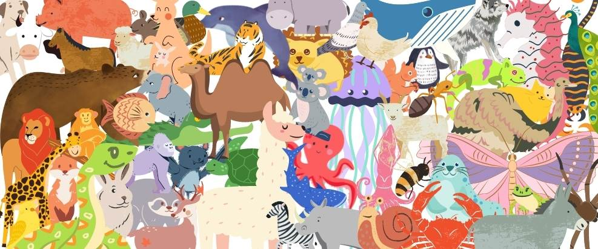

🐾 Jogo dos Animais em Espanhol
Escute a dica, clique no animal correto e avance. Se errar, começa tudo de novo!
Rodada 1 de 20
el león
Clique em “Ouvir dica” para começar.
Acertos
0
Tentativas
0
🔊 Ouvir dica
🔁 Reiniciar jogo
👁️ Mostrar/ocultar área do correto
